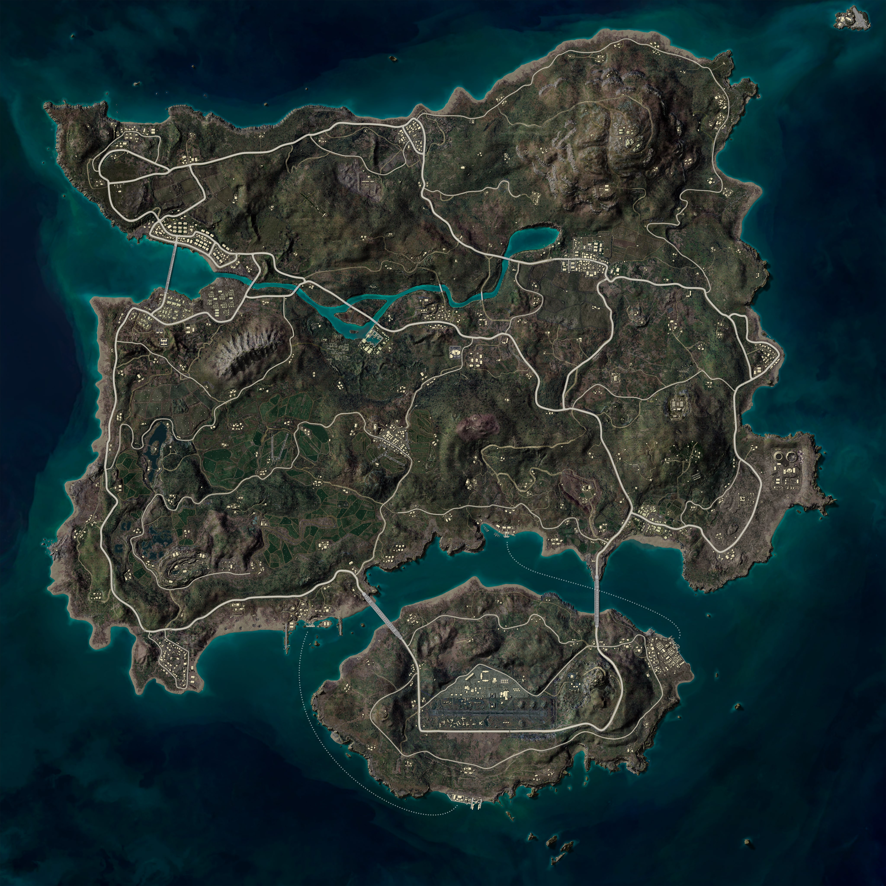

PUB-35 명당 정확도 검증 — v4 (53 영상 최종)
2026-05-19 · PUBG Esports KR 채널 (MAP) 영상 53개 전체 분석 · 마커 45,454개 · 32×32 격자 + 대도시 자동 검출
53
영상 (채널 한계)
45,454
마커
-
진짜 명당
-
S tier (10+매치)
-
A tier (5~9)
-
B tier (2~4)
전체
S만
A만
Top 20
대도시(빨강)
능선/호
외곽 작은마을

Top 명당 (점수 순)
#
좌표
T
매치
마커
분류